Use puppet shows to act out the messages of eating good food and keeping teeth clean.
Students can make their own puppets to look like people or animals.
Using puppets, it is often easier to say things that people themselves cannot. For example, they can talk openly about the bad food sold at the village store.
Children can make puppets easily from paper bags. They are good for showing teeth because you can make a wide-open mouth.
Open and close your hand to make it eat or speak.
To make a bigger puppet, attach a cardboard face to the bag.
A puppet made from a sock looks alive.
1. Fit the sock over your hand.
2. Make the mouth by pushing in the cloth between your thumb and fingers.
3. Add eyes, nose and hair to the sock or to a box that fits over it.
Loosely fill a cloth bag with old cotton or paper. Put the end of a stick inside, and tie the bag to it with tape or string. Make a sad or happy face to fit the story. Dress the puppet with an old piece of cloth.


PUPPET SHOWS—AN EXAMPLE*
Above, school children in Ajoya, Mexico are holding puppets they made themselves. On the left, you see them in front of the stage and at right, the children show how they hold the puppets behind the stage.
1) They called their puppet show “Rotten
Teeth—And A Friend’s Advice.”
2) Pedro, a schoolboy, is sad. His friends looked into his mouth and saw two teeth with big holes in them. He tells his brother he wants to walk home alone.
3) On the way, Pedro meets Maria, a friend who is a dental worker. “l’m not sad because the others are laughing,”
says Pedro.“ I know the real problem.
The holes in my teeth will get bigger.
My teeth will rot and fall out, and maybe my permanent teeth coming in will rot, too.”
Maria thinks she knows what to do. “We will talk to your father,” she says.
* For another example of a puppet show, and more suggestions for making puppets, see pages
27-35 to 27-39 of Helping Health Workers Learn.
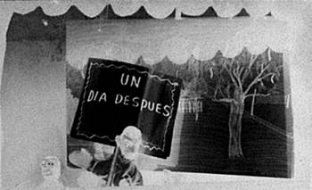


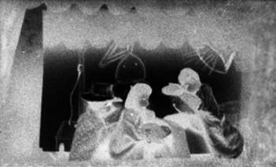
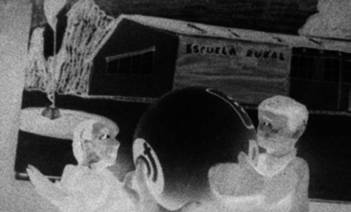
4) One day later.
(Note how the scene behind the puppets changes. lt is a flipchart with pictures to show the different places the puppets 'go’.)
5) “I am a poor farmer,” Pedro’s father tells Maria. “I only go to the city two times a year to sell my crops. I cannot take the boy to the city and pay for fillings in his teeth.”
Maria answers, “But we can save his teeth with a temporary cement filling.”*
6) “Then, when you have time and money, you can go to the city. I know a dental worker who will put in a permanent filling. I trust him. I will send a note with you, and it will not cost much.
”Good!” says the father. “Come on,
Pedro,” says Maria, “l’II put some cement in those holes!”
7) Four months later, Pedro visits the dental worker in the city. “Maria’s good fillings saved your teeth,” he says.
“These permanent fillings will last for years.”
“Terrific!” says Pedro.
8) After the show, the puppets played a game. Throwing a ball into the audience, they asked questions like
“How do you keep cavities from happening?” Each child who caught the ball answered the question and threw it back. Then the children in the audience began asking questions for the puppets to answer. “Why did you get rotten teeth?” one child asked
Pedro. The puppet looked down and said, “Too much candy!”
* To learn how to make a temporary filling, see Chapter 10.

CHAPTER 4
School Activities for Learning
About Teeth and Gums
We can help school children in two ways. First, they need treatment now for problems they already have. Second, they need to learn how to prevent problems from hurting them (and their families) later.
Treatment and prevention go together. It is a mistake to emphasize only prevention and to forget about treatment. In fact, early treatment is the first step to prevention because it usually meets a person’s most strongly felt, immediate need.
As a community dental worker, you can visit a school and find out what the felt needs are. Begin with the teacher. Examine for cavities, bleeding gums, or other problems. Then look at the students.
Chapter 6 tells you how to examine a person. It also helps you decide what treatment to give, and who should give it.
Then teach how to prevent dental problems. Give the teacher ideas to help students learn why they have problems, and how to keep the problems from returning. The best way to learn is by doing—through activities, not lectures. This chapter has many suggestions for activities.
The best health practice is to prevent cavities and gum disease from even starting. With these activities, children can do something to guard their health.
Teacher, each day at school:
Suggest ways for your students to eat good healthy kinds of food.
AND
Give your students time to clean their teeth.
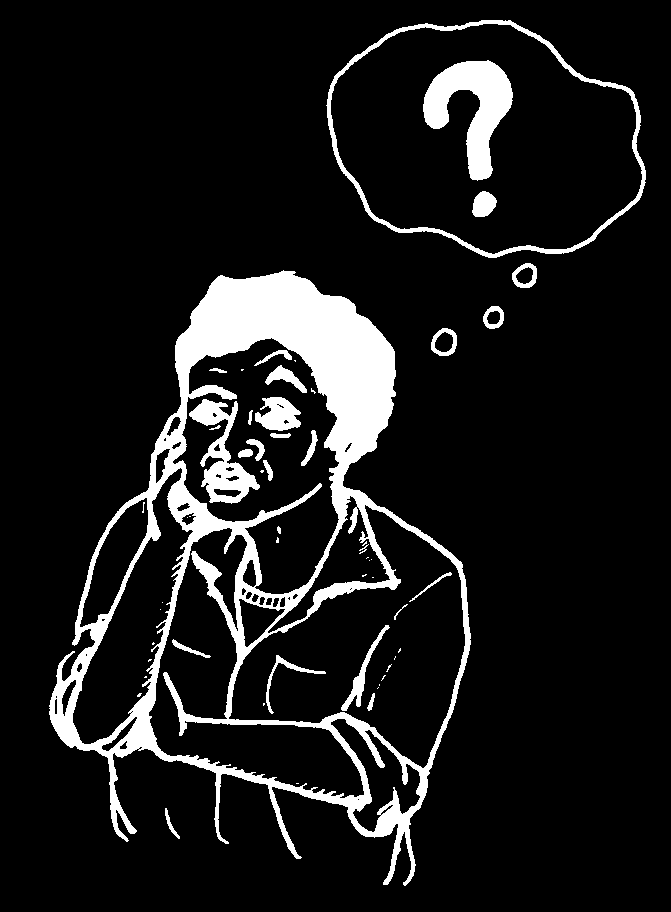
A Note To Teachers:
Do not wait for a dental worker. This book, and especially this chapter, is written to help you learn and do things yourself. But do ask your dental worker to work with you. He probably has suggestions that would fit your situation. After examining the children, he can help you follow their progress.
You can then find out how much they are learning and how healthy they are becoming.
To begin, talk with your students to find out what they think and what they already know. What are their traditional beliefs? Some may be helpful, and others may need changing. At first it is best simply to discuss.
Ask the kind of questions that get students talking. Later they will take part in discussions more easily.
Add new information as you go along, changing some ideas but usually building upon what the students already know.
This chapter asks nine questions:
• Why do we need teeth and gums?
• Why do some teeth look different?
• What holds the teeth?
• How often do teeth grow in?
• What makes teeth hurt?
• How do germs make holes in the teeth?
• What makes the gums feel sore?
• What does it mean if a tooth is loose?
• How can we prevent cavities and sore gums?
For each question, there is an activity to help students discover answers for themselves. The questions are not in any particular order, nor are they written for any particular grade level. Make your own lesson plan, using the main idea to help you. Shorten the lesson and make it easier for younger children. Add more information for older students and let them do more activities.


Why Do We Need Teeth and Gums?
THE IDEA:
Your teeth and the gums around them help you in many ways.
Teeth are important for:
Good Health. Infection from a bad tooth can spread to other parts of your body.
Good Looks. Healthy teeth that look good help you feel good.
Good Speech. Your tongue and lips touching the teeth help you make many sounds.
Good Eating. Your teeth break food into small pieces so that you can swallow and digest it better.
Good Breath. If you leave food around your teeth, your breath will smell bad.
Your gums are important too.
They fit tightly around the teeth, and help to keep them strong. Without strong gums, your teeth are of no use. Most old people lose teeth because of bad gums, not bad teeth.
ACTIVITIES:
1. Draw or cut pictures of people from magazines. Make posters to show that healthy teeth make a person happy, while bad teeth make a person sad. Use the posters for discussion.
Hang up a picture of a person the students know and like. Put black on one of her front teeth. Talk about it.
OR
Leave the picture for a few days. Then put black on some of her teeth before the students come to school. See who notices first.
When someone sees the difference, talk about how the person looks, how teeth can be lost, how to prevent that, and what she can do now.
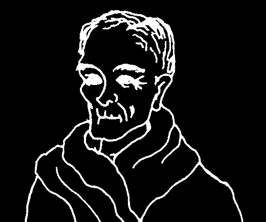
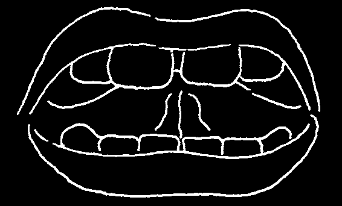

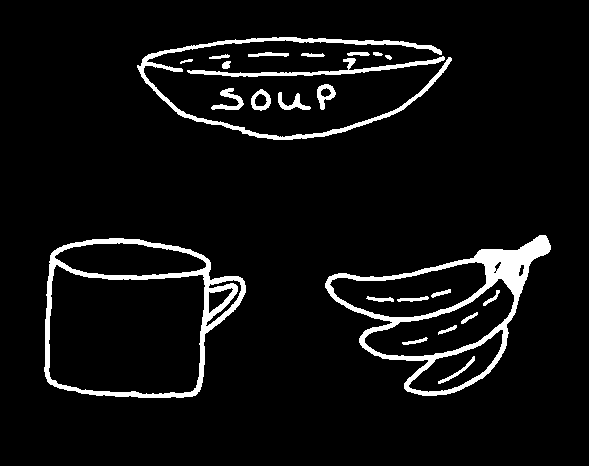
Make a picture of a person who has lost all of his teeth. He looks old.
Talk about how hard it is for him to eat properly or speak clearly.
2. Have the students say words that use teeth to make sounds.
“v” and “f” — friend, fever — the lower lip touches the top teeth.
“th” — the, teeth — the tongue touches the top teeth.
“s” — sun — air goes between the teeth.
Now, try saying the same words again, but do not let the tongue or lips touch the teeth.
3. Have students draw pictures of good foods we use our teeth to eat.
Then draw foods that we can eat if we lose our teeth.
Need Teeth
No Teeth Needed and but not many more!
much more!
Talk about this together. Try to eat a mango or some maize without using your teeth, or using only your front teeth.
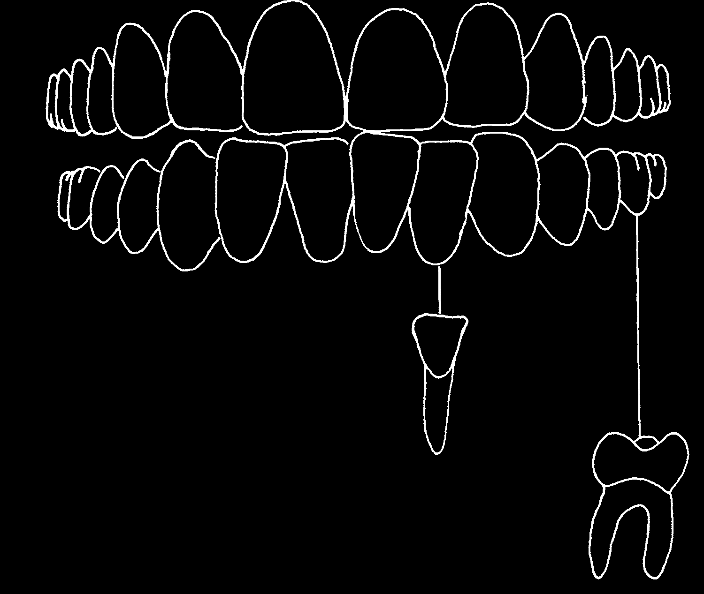
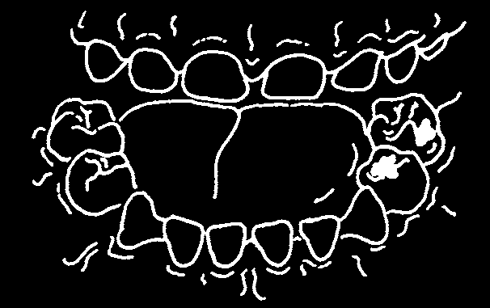
Why Do Some Teeth Look Different?
THE IDEA:
We need two different kinds of teeth to help us eat our food.
Front teeth. Another name for them is incisors. Their sharp edge cuts food into pieces.
Back teeth are called molars.
They chew and grind pieces of food into bits small enough to swallow.
The outside of a tooth is the hardest and strongest part of your body. When a tooth is healthy, it can chew hard food, even bone. The shape of a tooth allows us to swallow food when the small pieces can slide down its smooth sides.
Food that is not
Small bits of food cleaned away often get caught from the grooves inside deep lines, or can make a cavity grooves, in a tooth.
(hole) in them.
Look for them on
A tooth with a the top and the sides cavity is weak and of back teeth.
often hurts.

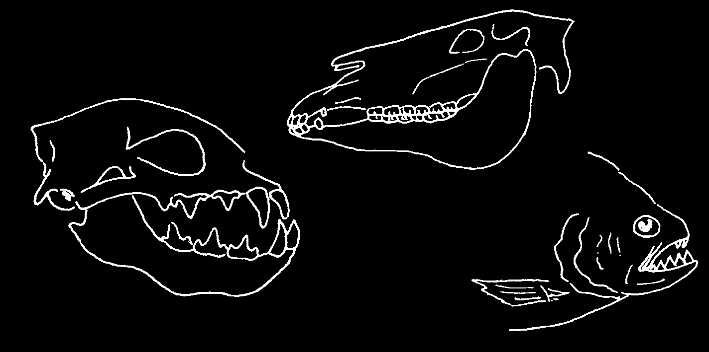
ACTIVITIES:
1. Ask the students to bring different kinds of food to class. Bring some yourself.
Eat the food using first the front and then the back teeth.
Bite a guava using only the back teeth.
Chew completely a mango or piece of maize, using only the front teeth.
2. Collect teeth from different animals. Let the students discover from the shape of an animal’s teeth the kind of food it usually eats. For instance, a wild cat needs sharp pointed teeth to tear meat, but a goat needs flat teeth to chew grass.
Make a poster to show the animal, its teeth, and the kind of food it likes to eat.
3. Have each student take a partner. Let each look at the shape of the front and back teeth in the other’s mouth.
Talk about the many different kinds of food we need to stay healthy.
Discuss which teeth we use to chew meat, fish, mango, and other good foods in your area. (For most foods, the answer is both front and back teeth!)
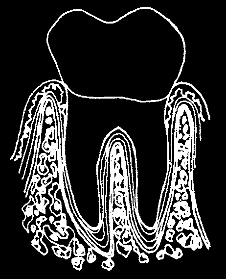


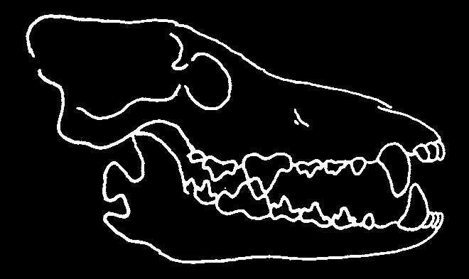
What Holds the Teeth?
THE IDEA:
When you look inside someone’s mouth, you see only the top part of each tooth. The bottom part, its root, is inside the bone under the gum.
The roots of the tooth hold it in the bone just like the root roots of a tree hold it firmly in the ground.
The roots of the tooth root do not actually touch fibers the bone. Root fibers connect the root and bone, holding the tooth in place.
bone
The gums do not hold the teeth, but healthy gums will keep harmful germs from getting to the bone and root fibers. When the gums are not healthy, they form deep 'pockets’ which collect germs. Soon, these germs will reach the root fibers and bone. The bone pulls away from the tooth in order to get away from the germs. With no bone to hold it, the tooth is lost. This is the most common reason why teeth fall out.
ACTIVITIES:
1. Have the students look for an old jaw bone from a dog or other animal. Notice that bone goes around every root of every tooth and holds it tightly. Break away some of the bone and look at the roots of the teeth.
Front teeth need only one root because they are used for biting.
Back teeth have 2, 3, or even 4 roots. That makes them strong enough to chew tough meat and even break hard bone.
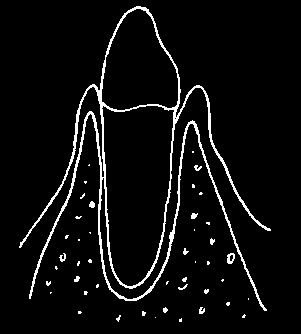

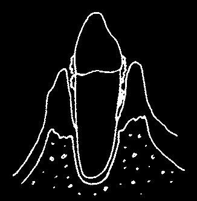
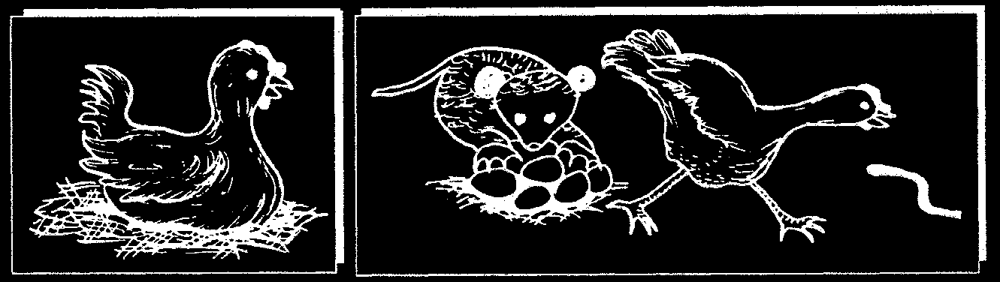
2. Show your students how infected gums can cause teeth to fall out.
A
B top of gum tartar tooth pocket bone pulling root away bone
A. When gum disease is beginning, a small red `pocket’ forms where the tooth meets the gum. Germs and food collect in the gum and make acid.
This makes the gums sore.
B. As a result, the gum pulls away and the pocket becomes deeper.
C. The bone moves away from the infection and no longer holds the tooth.
Try to think of other ways to teach how gum disease pushes the bone away from the tooth. In Jamaica, dental workers ask, “What do you do if someone attacks you with a machete (long knife)?” “I run away!” most people answer. “Exactly,” say the dental workers, “and when you have a lot of germs attacking the root of your tooth, the bone 'runs away’ and leaves the tooth with nothing to hold it.”
Tell a story to show how, when the gum moves away from the top of the tooth, the root and bone are open to attack. For example:
One day, a hen was sitting on the eggs in her nest. The hen was hungry, and when she saw a worm, she left the nest to catch the worm. Just then, a possum came along, saw the fresh, warm eggs, and ate them all up.
Explain to the students that the gums protect the teeth the way a hen protects her eggs. When she leaves the eggs unprotected and exposed, an animal can attack and destroy them. When gums around a tooth are red and sore, the tooth is exposed to germs that can attack not only the top of the tooth, but also the bone and root.
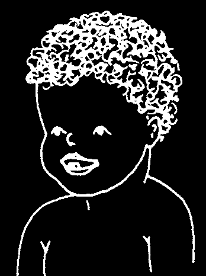

How Often Do Teeth Grow In?
THE IDEA:
A child gets two sets of teeth. The first set, baby teeth, starts to grow when the child is a baby. The second and last set grows in at school age. They are the permanent teeth. Permanent teeth should last a lifetime.
A child grows his first baby tooth at about 7 months of age. It is usually a front one.
A baby who is poorly nourished, however, may not grow his first tooth until later. Do not wait for the first tooth before giving him the extra soft food he needs to grow and stay healthy.
The remaining baby teeth grow in over the next 24 months. By the time the child is 30 months old, there will be a total of 20 baby teeth in his mouth,
10 on top and 10 on the bottom.
Most permanent teeth form under the baby teeth. When the child is between 6 and 12 years old, the permanent teeth push against the roots of the baby teeth, making them fall out. Not all of the baby teeth fall out at once. One tooth at a time becomes loose, falls out, and then is replaced with a permanent tooth. The new tooth may not grow in immediately. Sometimes
2 or 3 months pass before the new tooth grows into the space.
In the 6 years between ages 6 and 12, the 20 permanent teeth replace the
20 baby teeth. In addition, 8 other teeth grow in behind the baby teeth.
At 6 years the 4 first permanent molars start to grow in at the back of the mouth. This means an
8-year-old child should have
24 teeth, or spaces for them.
At 12 years, the 4 second permanent molars grow in behind the first molars. This means a
14-year-old child should have
28 teeth, or spaces for them.
Between 16 and 22 years, the 4 third permanent molars grow in. This means that an adult usually has a total of 32 permanent teeth: 16 on top and 16 on the bottom.*
*(Note: the third molars often do not grow in correctly. This is a very common cause of tooth pain. See page 66.)


THE ACTIVITY:
Have the students examine each other.* Help them learn which are baby teeth and which are permanent teeth. Look for the important 1st permanent molars at the back.
Show the students
PERMANENT TOOTH
how to count the teeth and the spaces that are ready for new
LOOSE BABY TOOTH
teeth to grow in.
SPACE FOR NEW TOOTH
Then have them count their friends’ teeth, to find out how many teeth should be growing in different age groups. Later, they can do this with their brothers and sisters at home.
• Wash your hands.
• Count the teeth.
• Count the spaces where new teeth have not yet grown in.
TOTAL = teeth + spaces
• Find out the person’s age.
Have the students first write their totals on the blackboard. Then make a chart for the children to remember and discuss the results.
* Here the children are only counting the teeth. They can also learn to check for cavities and gum disease (see p. 49).
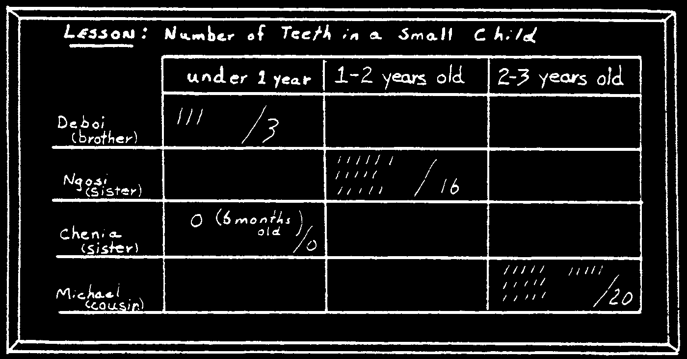
Discuss the number of teeth children have at different ages. Young children
6 to 12 years old, for example, have 24 teeth; older students, 28 teeth; and most adults, 32 teeth.
At home, students can count brothers’ and sisters’ teeth to learn how many teeth small children have. Count only the teeth and not the spaces.
Ask the students what other things they saw inside someone else’s mouth.
This is a good time for students to discover important things about good health practices. Encourage them to learn as much as they can from what they see, and then show them how to use a book like this to answer their own questions, For example, if students see cavities and red bleeding gums, you can start a discussion on tooth decay and gum disease. Use some of the activities on pages 55 to 60.
For another example, if the students see a baby who has only a few teeth, they may have some interesting questions. Show them this book and invite them to read pages 63 to 65 to find answers to questions like these.
• Can Chenia, who is 6 months old and has no teeth, eat soft foods?
Should she have more than just breast milk?
• When Chenia’s teeth grow in, will they give her diarrhea and fever?
• Will a 2-year-old girl get more baby teeth?
• Why do we care for baby teeth, when we only need them for a few years?

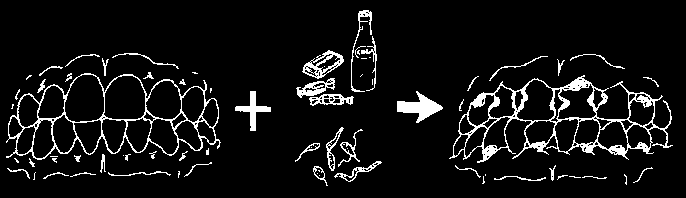
What Makes Teeth Hurt?
THE IDEA:
A tooth will hurt if it is broken, loose, or if it has a cavity. Cavities are the usual cause of toothaches.
Healthy teeth are alive.
Two thin strings enter each tooth. One, the nerve, come from the brain and carries the message of pain. The other is the blood vessel. It comes from the heart and carries blood to the tooth.
If you could peel away the gum and look inside the bone, you would see that a nerve and a blood vessel go into each one of a tooth’s roots.
They give the tooth life and feeling.
The hard cover of the tooth protects the nerve and blood vessel inside it. But when tooth decay eats through that cover, the nerve and blood vessel are unprotected. A cavity lets food, water and air get closer to the nerve, and that can make the tooth hurt.
The sugar in food makes tooth decay possible. Sweet food that is also sticky is the worst of all because it glues itself to the teeth. Germs inside your mouth use the sugar to grow and to work harder at making cavities.
See the next section for more discussion of how germs and sugar combine to cause cavities.